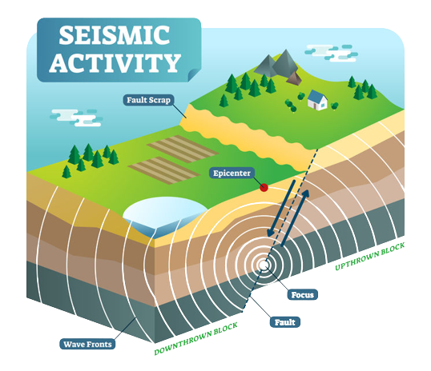
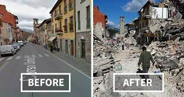
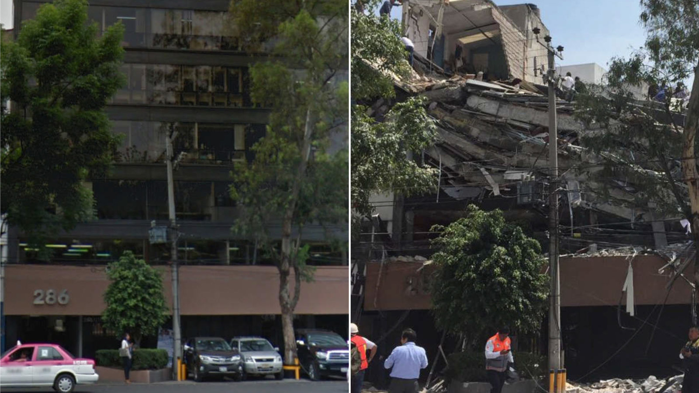

• An earthquake (also known as a quake, tremor or temblor) is the shaking of the surface of the Earth resulting from a sudden release of energy in the Earth’s lithosphere that creates seismic waves. Earthquakes can range in intensity, from those that are so weak that they cannot be felt, to those violent enough to propel objects and people into the air, damage critical infrastructure, and wreak destruction across entire cities.
• An earthquake (also known as a quake, tremor or temblor) is the shaking of the surface of the Earth resulting from a sudden release of energy in the Earth’s lithosphere that creates seismic waves. Earthquakes can range in intensity, from those that are so weak that they cannot be felt, to those violent enough to propel objects and people into the air, damage critical infrastructure, and wreak destruction across entire cities.
• The pressure is then released and that causes seismic waves.
• The waves that cause earthquake spread out at a point which is called focal.
• The point where on the Earth's surface directly above the focus is the epicenter singer.
• Hence the maximum damage on the surface of earth is near the epicenter
• The study of earthquake is called seismology seismologists use seismograph to record earthquake shocks. A Richter scale is used to measure in intensity of the of an earthquake.
• The strongest earthquake in India happened on 08/15/1950 in the India-China region with a magnitude of 8.6 on the Richter scale. The shifting of tectonic plates in a depth of 30 km resulted in 1530 deaths.
• The biggest earthquake ever recorded, of magnitude 9.5, happened in 1960 in Chile, at a subduction zone where the Pacific plate dives under the South American plate.
• Moonquakes (“earthquakes” on the moon) do occur, but they happen less frequently and have smaller magnitudes than earthquakes on the Earth.
Before And After Effects Of Earthquakes
• The epicenter of an earthquake is the location directly above the hypocenter on the surface of the earth.
Four Earthquake Zones In India Are:-
Some of the major earthquakes occurred in India are in Uttarkashi 1991 Latur 1993 bhuj 2001 Uri 2015and Bihar 2015.
Steps that can be useful in minimizing the damage from an earthquake are:-
• Practice drop cover and hold on this means that if you are indoor during an earthquake get under the story table or desk hold on onto its leg and cover your eyes with the other arm.
• Stay away from glass windows bookcases or any other tall furniture that could fall on you.
• Move and stand in a open space from tall structures like building trees and electric pole etc.
• While constructing buildings bridges flyovers dams proper norms should be followed all buildings should be strengthened through the process of retrofitting
• Keep a first aid box in your home and school administrators first aid to the injured once you all are out in the open.
• Check your building for damage.
• Avoid snapped wires
• Gas leak can often happen during earthquakes so switch off all lights and the stove